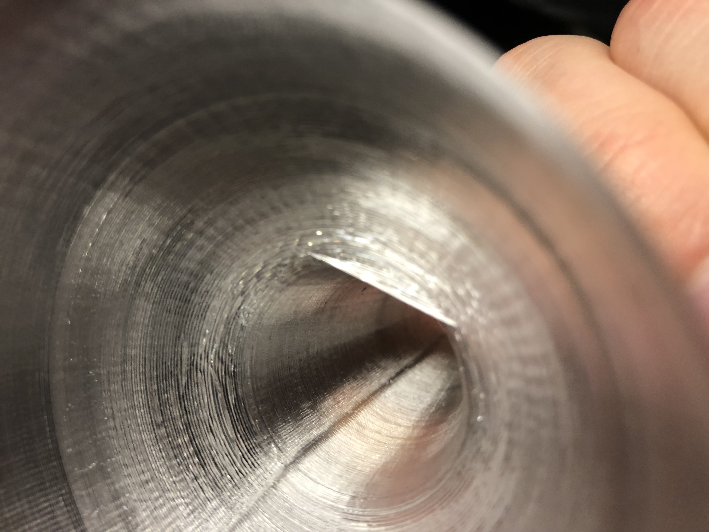
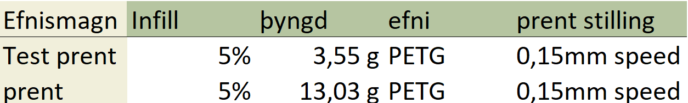

Verklýsing
Verkefni 3 er skipt upp í tvo hluta. Í hluta eitt er hannað módel sem hefur þær takmarkanir að ekki er hægt að framleiða það með frádráttar framleiðslu aðferðum. Ákveðnir parametrar hönnunarinnar eru síðan prentaðir til þess að sannreyna hvort prentið gangi upp áður en það er prentað í heild sinni. Að lokum er módelið prentað út í heild sinni. Í hluta tvö á að þrívíddarskanna hlut með einhverskonar búnaði á borð við photogrammetríu.Hluti 1 - Þívíddarprentun
Í hugmyndafasa þessa verkefnis þá ákvað ég að ég vildi prenta eitthvað út sem gæti hjálpað mér í mínu daglega lífi og væri því ekki tilgangslaus plastmengun. Ég fór í gegnum margar mögulega hugmynd á borð við "Endurnýtanlegt" plast rör, blómavasa og fleira álíkar hugmyndir en að lokum tók ég þá ákvörun að búa til trekt. Ástæðan fyrir þeirra ákvörðun var sú að fyrir hverja æfingu notaði ég hendurnar sem trekt til þess að koma kreatíni ofan í kristals flösku. Það var orðið frekar þreytt og tók ég því málin í mínar eigin hendur. Á mynd eitt er hægt að sjá teikninguna fyrir trektina en á mynd tvö er hægt að sjá hana í allri sinni dýrð.Mynd 1: Teikning með málsetningum af trekt
mynd 2: Trektin
Mynd 3: Trekt á prentunarborði
mynd 4: Prentunar prófanir

Mynd 5: Galli í skilum á milli efri og neðri hluta trektar
mynd 6: Trektin komin úr prentun

Á myndum átta og níu er síðan hægt að sjá trektina í notkun, en kom hún töluvert betur út heldur en ég bjóst við.
Mynd 7: Eiginleikar beggja prenta
Mynd 8: Trekt í notkun
mynd 9: Trektin í notkun
Mynd 9: Öxull fyrir vélræna hendi
mynd 10: Öxullinn í notkun
Hluti 2 - Þrívíddarskönnun
Í þessum hluta átti að þrívíddarskanna einhvern hlut, ég hins vegar lenti í miklu basli við það, þar sem flest öll frí photogrammetry öpp eru gjörsamlega ónothæf í að vinna úr myndagögnum. Það hins vegar tókst að lokum og er hægt að sjá eitt stykki svamp í eftirfarandi fusion hlekk. Ég notaði appið Polycam þar sem ég tók 41 mynd af svampinum frá öllum hornum. Athuga þarf að mikilvægt er að ná mynf af öllum krókum og kimum skannaða hlutsinsTímatafla verkefnis þrjú
Þegar tímavinnsla verkefnis er tekin saman þá fæst eftirfarandi niðurröðunMynd 11: Tímaskráning verkefnis